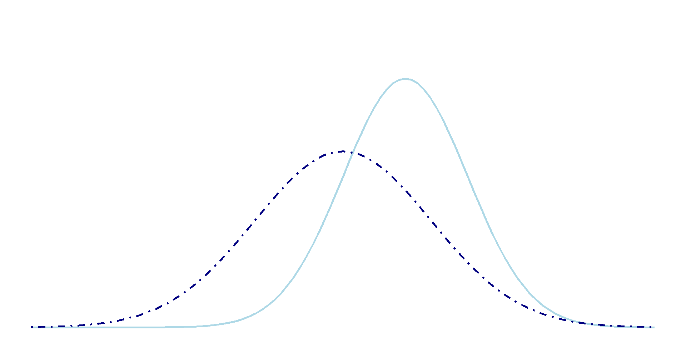

A density ratio approach
Getty Images
Thom Volker (t.b.volker@uu.nl)
MSc. in Methododology and Statistics & Sociology
PhD-candidate at Utrecht University and Statistics Netherlands
This presentation can be found online at
https://thomvolker.github.io/synth-utility
All source code and data can be found at
Fake data, generated data, simulated data, digital twins
Synthetic data is created with a generative model
\[p(\boldsymbol{X} | \theta)\]
A model \(f\) for the data \(\boldsymbol{X}\);
With parameters \(\theta\);
Estimated on real data
Definition
Generative models learn the distribution of the data \(\boldsymbol{X}\) given the parameters \(\theta\).
A normal distribution with parameters \(\theta = \{\mu, \sigma\}\).
R: rnorm(n = 100, mean = 1, sd = 2)A histogram with bins and proportions.
Sequential prediction models for a multivariate distribution.
A neural network with thousands of parameters.
miceObserved data
| mpg | cyl | disp | hp | drat | wt | qsec | vs | am | gear | carb | |
|---|---|---|---|---|---|---|---|---|---|---|---|
| Mazda RX4 | 21.0 | 6 | 160 | 110 | 3.90 | 2.620 | 16.46 | 0 | 1 | 4 | 4 |
| Mazda RX4 Wag | 21.0 | 6 | 160 | 110 | 3.90 | 2.875 | 17.02 | 0 | 1 | 4 | 4 |
| Datsun 710 | 22.8 | 4 | 108 | 93 | 3.85 | 2.320 | 18.61 | 1 | 1 | 4 | 1 |
Synthetic data
| mpg | cyl | disp | hp | drat | wt | qsec | vs | am | gear | carb | |
|---|---|---|---|---|---|---|---|---|---|---|---|
| Mazda RX41 | 15.2 | 8 | 275.8 | 175 | 3.21 | 3.780 | 18.52 | 0 | 0 | 3 | 2 |
| Mazda RX4 Wag1 | 27.3 | 4 | 120.3 | 95 | 4.43 | 1.513 | 17.40 | 1 | 1 | 4 | 1 |
| Datsun 7101 | 15.2 | 8 | 351.0 | 150 | 3.07 | 3.840 | 18.52 | 0 | 0 | 3 | 2 |
But generating high-quality synthetic data is hard!
Create synthetic data with simple models
Evaluate the quality of the synthetic data
Add complexities where necessary (transformations, interactions, non-linear relations)
Iterate between (2.) and (3.) until the synthetic data is of sufficient quality
Intuitively
Can we use the synthetic data for the same purposes as the real data?
Does the synthetic data have the same properties as the real data?
Practically
Do analyses on the synthetic data yield similar results as on the real data?
Can we distinguish the synthetic data from the real data?
But we rarely know what the data will be used for…
If the synthetic and observed data have similar distributions, they should yield similar results.

Bind synthetic and observed data together
Predict for each observation the probability \(\pi_i\) that it is synthetic
Calculate \(pMSE\) as \(\sum^N_{i=1} (\pi_i - c)^2/N\), with \(c = n_{\text{syn}} / (n_{\text{syn}} + n_{\text{obs}})\)
Compare \(pMSE\) with the expected value under a correct generative model
Intuitive and flexible, easy to calculate
Sometimes too simple
Model specification can be difficult
Density ratios1 as a utility measure
\[r(x) = \frac{p(\boldsymbol{X}_{\text{obs}})}{p(\boldsymbol{X}_{\text{syn}})}\]
R-package densityratio.Calculate a discrepancy measure for the synthetic data (Kullback-Leibler divergence, Pearson divergence)
Compare the divergence measure for different data sets
Optionally: Test the null hypothesis \(p(\boldsymbol{X}_{\text{syn}}) = p(\boldsymbol{X}_{\text{obs}})\) using a permutation test.
R
Call:
ulsif(df_numerator = mtcars, df_denominator = syn)
Kernel Information:
Kernel type: Gaussian with L2 norm distances
Number of kernels: 32
Optimal sigma: 1.200419
Optimal lambda: 0.1623777
Optimal kernel weights (loocv): num [1:33] 0.831 0.185 0.149 -0.14 0.324 ...
Pearson divergence between P(nu) and P(de): 0.2304
Pr(P(nu)=P(de)) = 0.38
Bonferroni-corrected for testing with r(x) = P(nu)/P(de) AND r*(x) = P(de)/P(nu).RObserved data distribution
\[ \begin{aligned} X_{1:4} &\sim \mathcal{MVN}(\mathbf{\mu}, \mathbf{\Sigma}), ~~ X_5 \sim \mathcal{N}(X_1^2, V[X_1^2])\\ X_{1:20} &\sim \mathcal{MVN}(\mathbf{\mu}, \mathbf{\Sigma}), ~~ X_{20+i} \sim \mathcal{N}(X_i^{(i+1)}, V[X_i^{(i+1)}]) ~~~~~~~~ \text{for } i \in 1, \dots, 5 \\ &\mathbf{\mu} = \begin{bmatrix} 0 \\ \vdots \\ 0 \end{bmatrix}, \mathbf{\Sigma} = \begin{bmatrix} 1 & & & \\ 0.5 & 1 & & \\ \vdots & \ddots & 1 & \\ 0.5 & \cdots & 0.5 & 1 \end{bmatrix} \end{aligned} \]
Synthetic data distributions: (1.) Uncorrelated multivariate normal, (2.) correlated multivariate normal, (3.) correct distribution.
Proportion of simulations the estimated density ratios and \(pMSE\) values are ranked correctly (in terms of quality).
| N | P | PE | pMSE |
|---|---|---|---|
| 500 | 5 | 0.80 | 0.74 |
| 500 | 25 | 0.97 | 0.75 |
| 2500 | 5 | 1.00 | 0.97 |
| 2500 | 25 | 1.00 | 0.75 |
Categorical variables: (multinomial) logistic regression
Continuous variables:
| Method | Intercept | Slope |
|---|---|---|
| Observed | 0.0033124 | 0.4566900 |
| Synthetic | 0.0100967 | -0.0035725 |
| Reweighted | -0.0230975 | 0.4169210 |
Automatic cross-validation implemented in the package
No model specification required
Dimension reduction: estimate the density ratio in a lower-dimensional subspace.
Supervised dimension reduction: estimate the density ratio in a subspace where the observed and synthetic data are most different.
Questions?
In case of further questions, please reach out!